Utility-First Trial Onboarding
High-fidelity screenshot-style concepts for first-run SpeakLocal Vietnam. The recommended flow proves traveler value first: hear and save one useful phrase before setup and before the 7-day trial ask.
No free-tier CTA
Recommended 6-Screen Flow
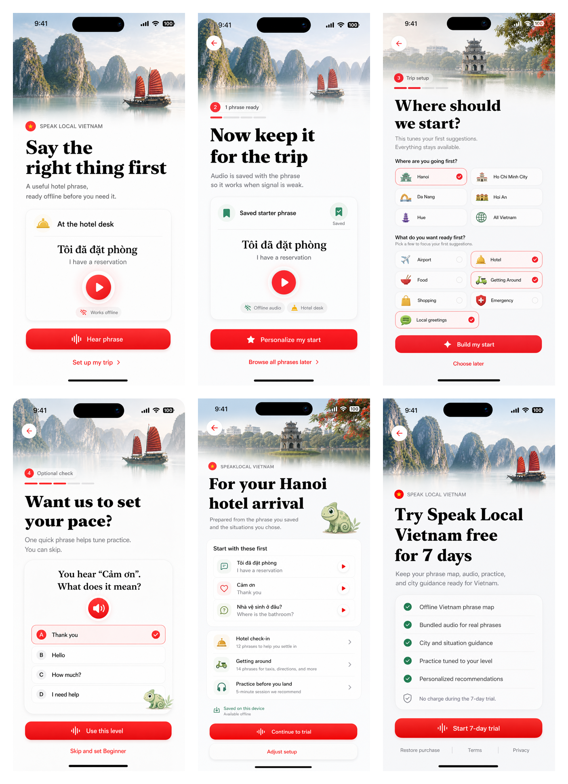
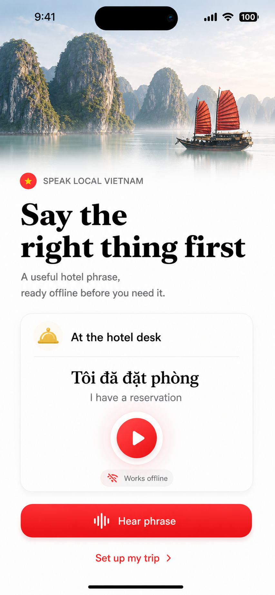
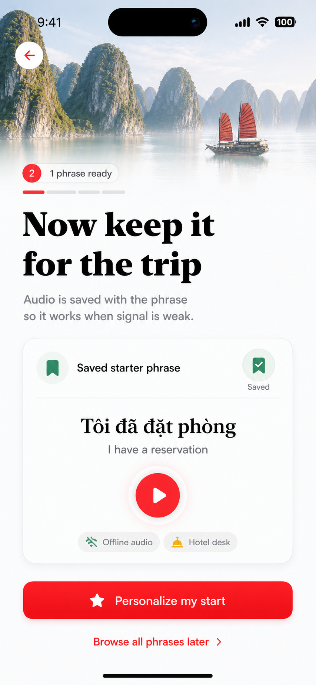
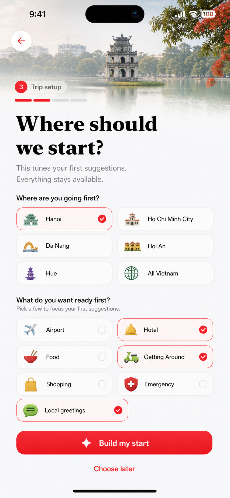
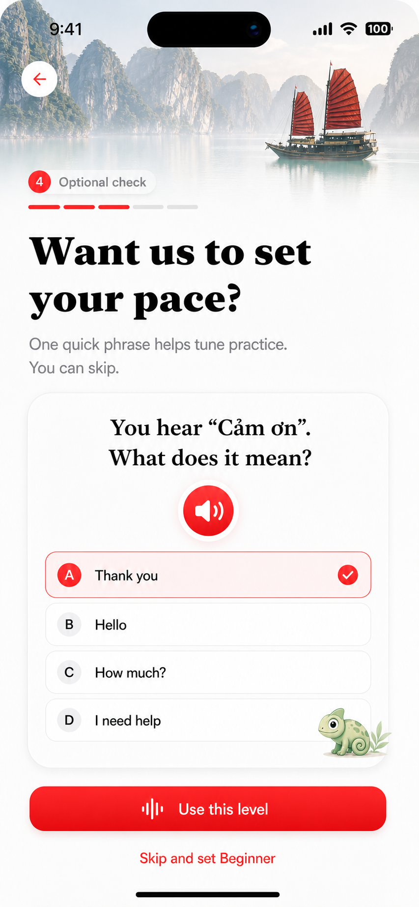
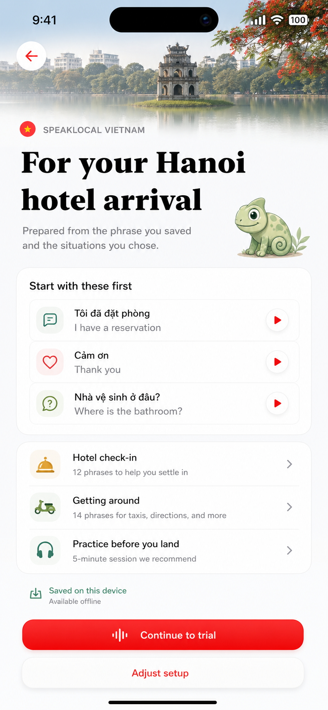
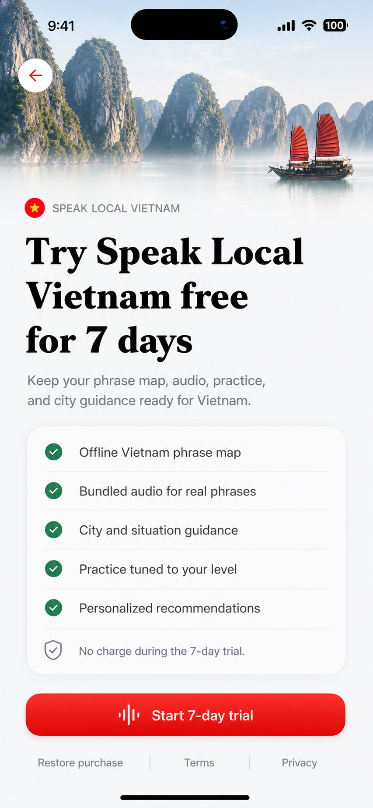
Compact Alternate
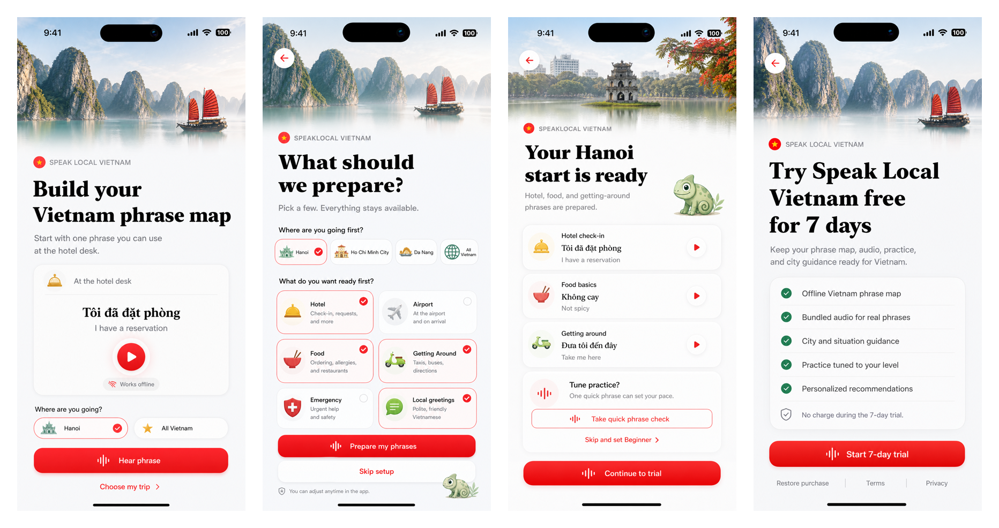
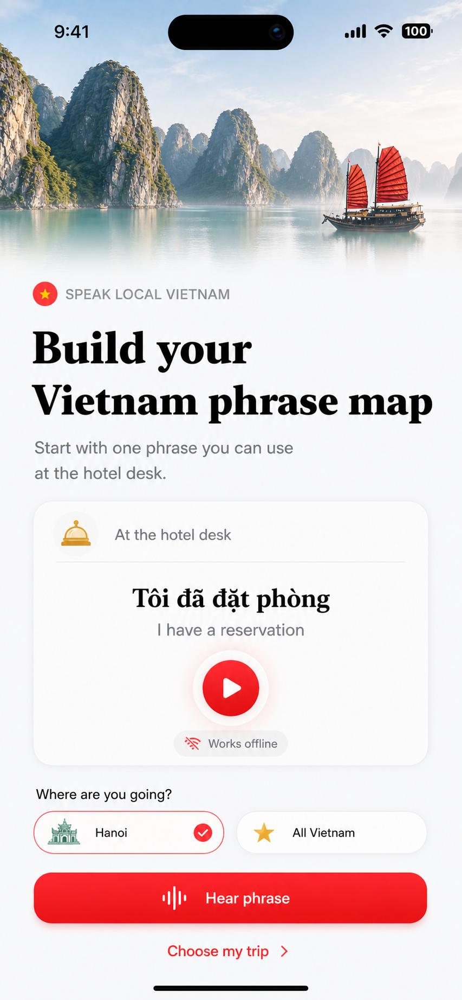
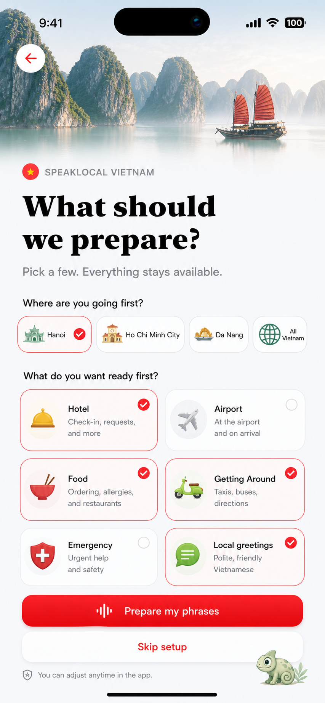
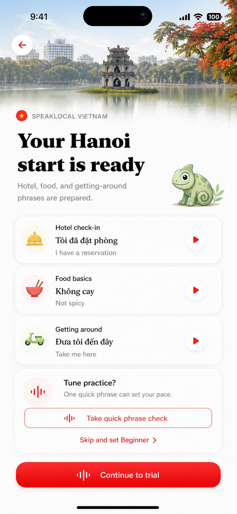

First value The user hears and saves a real phrase before the app asks for setup or payment.
Personalization Setup questions are kept only because they visibly change the personalized preview.
Melo Melo is small and supportive on setup or preview moments, never on controls or the paywall.